クロネの指輪 刻印
| 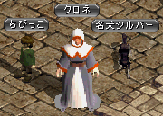 |
神聖都市アウグスタ クロネ（62.103）にて |
| 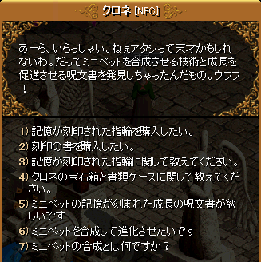 |
月・水・金・土・日の13〜23時のみ、 クロネの指輪と刻印の書を購入できる。 クロネの指輪は、異次元/鏡の魔法書/錬成不可。 希望/記憶/願い/思い出/熱血/儚い希望の各1種類につき1個のみ装備可能。 |
| 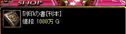 |
購入できるアイテムは、 指輪3種類と刻印の書[刊本]のみ。 |
| 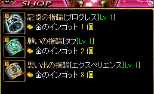 |
他の指輪や刻印の書/羊皮紙は本体Lv-100以上のモンスターからドロップするクロネの宝石箱/書類ケースより出現する。 |
| 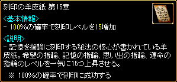 |
刻印の羊皮紙は、元の刻印Lvに関わらず一気に刻印Lvを上昇させる。 第15章は刻印Lv1〜14の指輪に使用でき、刻印Lv15になる。 |
| 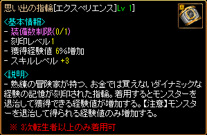 |
素材は 思い出の指輪[エクスペリエンス]Lv 1] |
| 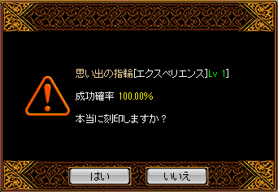 |
成功確率100％ |
| 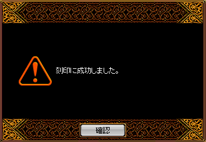 |
|
| 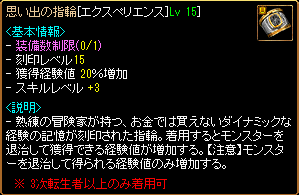 |
刻印Lv 1 ⇒ Lv 15 へ上昇 刻印Lvの上限はLv30まで。 |
| 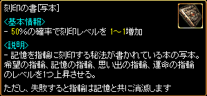 |
刻印の書は、刻印Lvを1〜3上昇させる。 |
| 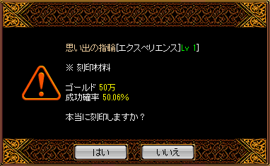 |
刻印の書の成功確率は、 運×0.0005+[40~60]％ （小数点第三位は四捨五入） 刻印の書[写本]の場合、 運×0.0005+50％ 刻印の書で刻印する場合は、 刻印Lvによってゴールドと結晶石が必要になる。 |
| 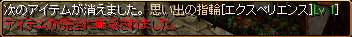 | 失敗すると完全破壊される。 |
| 刻印の書 / 羊皮紙 | ||
|---|---|---|
| アイテム | 効果 | |
| 刻印の書[刊本] | 40％の確率で刻印レベルを1〜1増加 | |
| 刻印の書[写本] | 50％の確率で刻印レベルを1〜1増加 | |
| 刻印の書[原本] | 60％の確率で刻印レベルを1〜1増加 | |
| 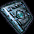 | 刻印の書DX[刊本] | 40％の確率で刻印レベルを1〜3増加 |
| 刻印の書DX[写本] | 50％の確率で刻印レベルを1〜3増加 | |
| 刻印の書DX[原本] | 60％の確率で刻印レベルを1〜3増加 | |
| 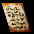 | 刻印の羊皮紙 第3章 | 100％の確率で刻印レベルを3増加 |
| 刻印の羊皮紙 第5章 | 100％の確率で刻印レベルを5増加 | |
| 刻印の羊皮紙 第10章 | 100％の確率で刻印レベルを10増加 | |
| 刻印の羊皮紙 第15章 | 100％の確率で刻印レベルを15増加 | |
| 刻印の書[初版本] | 10％の確率で刻印レベルを1〜1増加 刻印失敗時、破壊されない |
|
| 刻印の書DX[初版本] | 10％の確率で刻印レベルを1〜3増加 刻印失敗時、破壊されない |
|
| 刻印の書 刻印材料 | ||
|---|---|---|
| 刻印Lv | ゴールド | 結晶石 |
| 1 | 50万 | - |
| 2 | 100万 | |
| 3 | 150万 | |
| 4 | 200万 | |
| 5 | 250万 | |
| 6 | 300万 | |
| 7 | 400万 | 1個 |
| 8 | 500万 | |
| 9 | 600万 | |
| 10 | 700万 | |
| 11 | 800万 | |
| 12 | 900万 | |
| 13 | 1000万 | |
| 14 | 1200万 | |
| 15 | 1400万 | |
| 16 | 1600万 | |
| 17 | 1800万 | |
| 18 | 2000万 | |
| 19 | 2200万 | |
| 20 | 2400万 | |
| 21 | 2600万 | |
| 22 | 2800万 | |
| 23 | 3000万 | |
| 24 | 3500万 | |
| 25 | 4000万 | |
| 26 | 4500万 | |
| 27 | 5000万 | |
| 28 | 5500万 | |
| 29 | 6000万 | |